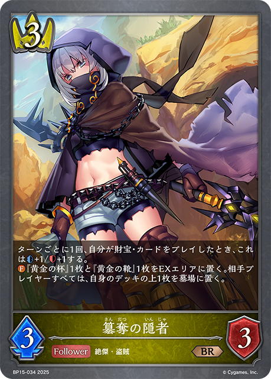
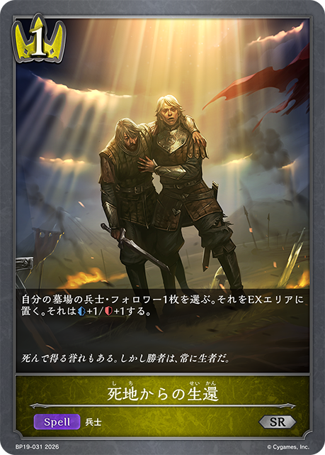

1 S/N-GUL4R1TY
1/59｜2026/05/02
7J0V3
多了哪些牌
 +2
+2 +1
+1少了哪些牌
 -3
-3 主BP05-034/BP05-P14/PR-490：アヴァリティア主卡组 × 3
主BP05-034/BP05-P14/PR-490：アヴァリティア主卡组 × 3 主BP15-026/BP15-P05：極意たる空絶主卡组 × 3
主BP15-026/BP15-P05：極意たる空絶主卡组 × 3 主BP19-030/PR-517：海原の斥候主卡组 × 3
主BP19-030/PR-517：海原の斥候主卡组 × 3 主BP14-034/PR-371：盗賊の乱飛主卡组 × 2
主BP14-034/PR-371：盗賊の乱飛主卡组 × 2 主BP05-018/BP05-SL04：簒奪の絶傑・オクトリス主卡组 × 3
主BP05-018/BP05-SL04：簒奪の絶傑・オクトリス主卡组 × 3 主BP05-033/BP05-P13：簒奪の蛇剣主卡组 × 3主BP15-028/BP15-P06：空絶の崇拝者主卡组 × 2
主BP05-033/BP05-P13：簒奪の蛇剣主卡组 × 3主BP15-028/BP15-P06：空絶の崇拝者主卡组 × 2 主BP15-035：アサルトバンデッド主卡组 × 3
主BP15-035：アサルトバンデッド主卡组 × 3 主BP15-113/BP15-SL29/BP15-SP02：干絶の飢餓・ギルネリーゼ主卡组 × 3
主BP15-113/BP15-SL29/BP15-SP02：干絶の飢餓・ギルネリーゼ主卡组 × 3 主BP19-026/PR-515：潮流の砲手主卡组 × 3
主BP19-026/PR-515：潮流の砲手主卡组 × 3 主BP19-028/BP19-P07：荒波の副船長主卡组 × 3
主BP19-028/BP19-P07：荒波の副船長主卡组 × 3 主BP15-020/BP15-SL06：空絶の簒奪・オクトリス主卡组 × 3主BP11-018/BP11-SL04/BP11-SP01/BP11-U02/BP18-SP01/SD07-004：カースドクイーン・ナハト・ナハト主卡组 × 3
主BP15-020/BP15-SL06：空絶の簒奪・オクトリス主卡组 × 3主BP11-018/BP11-SL04/BP11-SP01/BP11-U02/BP18-SP01/SD07-004：カースドクイーン・ナハト・ナハト主卡组 × 3 主BP19-019/BP19-SL05/BP19-SP01：出航の咎人・バルバロス主卡组 × 3
主BP19-019/BP19-SL05/BP19-SP01：出航の咎人・バルバロス主卡组 × 3 进BP05-019/BP05-SL05/BP05-U02：簒奪の絶傑・オクトリス进化 × 2
进BP05-019/BP05-SL05/BP05-U02：簒奪の絶傑・オクトリス进化 × 2 进BP15-029/BP15-P07：空絶の崇拝者进化 × 2
进BP15-029/BP15-P07：空絶の崇拝者进化 × 2 进BP15-114/BP15-SL30/BP15-U07：干絶の飢餓・ギルネリーゼ进化 × 2
进BP15-114/BP15-SL30/BP15-U07：干絶の飢餓・ギルネリーゼ进化 × 2 进BP19-020/BP19-SL06/BP19-U02：出航の咎人・バルバロス进化 × 2
进BP19-020/BP19-SL06/BP19-U02：出航の咎人・バルバロス进化 × 2 进BP19-029/BP19-P08：荒波の副船長进化 × 2+2+1-3
进BP19-029/BP19-P08：荒波の副船長进化 × 2+2+1-3 +2+1-3
+2+1-3 +2+1-3+2+1-3+3
+2+1-3+2+1-3+3 +2
+2 +2
+2 +2+1-3-3-2-2+2+1-3
+2+1-3-3-2-2+2+1-3 +1
+1 +1-2+2+1-3+2+1-3+3+1-3-1+3+2+2
+1-2+2+1-3+2+1-3+3+1-3-1+3+2+2 +2-3-2-1-1-1-1+3+3
+2-3-2-1-1-1-1+3+3 +2
+2
+2+1 +1-3-2-2-2-2-1+1+1-2+3+2+1+1+1-3-2-2-1+3+3+2+2+2+1-3-3-3-2-2+1+1-2+3+3+3+2+2
+1-3-2-2-2-2-1+1+1-2+3+2+1+1+1-3-2-2-1+3+3+2+2+2+1-3-3-3-2-2+1+1-2+3+3+3+2+2 +2+1
+2+1 +1-3-3-3-2-2-2-2+2+1-3+2+1+1-3-1+3+1+1+1+1-3-2-2+3+1-3-1+3+2+1+1-3-2-2+2+1-3+2+1-3+3+2-3-2+1-1+2+2+1+1+1-3-2-2+3+1-3-1+3-2-1+2+1-3+3+2+1-3-2-1+2+1-3+3+2+1+1+1-3-3-2+2+1-3+3+1-3-1+3+3+3+2
+1-3-3-3-2-2-2-2+2+1-3+2+1+1-3-1+3+1+1+1+1-3-2-2+3+1-3-1+3+2+1+1-3-2-2+2+1-3+2+1-3+3+2-3-2+1-1+2+2+1+1+1-3-2-2+3+1-3-1+3-2-1+2+1-3+3+2+1-3-2-1+2+1-3+3+2+1+1+1-3-3-2+2+1-3+3+1-3-1+3+3+3+2 +2+1-3-3-2-2-1-1-1-1+1-1+3+1-3-1+2+1-3+3+1-2-2+3+2
+2+1-3-3-2-2-1-1-1-1+1-1+3+1-3-1+2+1-3+3+1-2-2+3+2 +2+2
+2+2 +2+1+1-3-3-2-2-1-1-1+2+1-3+2+2+1-3-2+3+2+1+1+1-3-2-2-1+3+1-2-2+3+2+1+1+1+1-3-2-2-2+3+3+2+2
+2+1+1-3-3-2-2-1-1-1+2+1-3+2+2+1-3-2+3+2+1+1+1-3-2-2-1+3+1-2-2+3+2+1+1+1+1-3-2-2-2+3+3+2+2 +1+1+1-3-3-3-2-1-1+3+2+1+1+1+1-3-2-2-2+2+1-1-1-1+3+2+2+2+1+1-3-3-2-2-1+2+1-3+3+3+1+1-3-3-2+3+2+1+1+1-3-2-2-1+2+1-2-1+3+2+1+1-3-2-2+3+3+2+2+1+1+1-3-3-2-2-1-1-1+3+1-3-1+3
+1+1+1-3-3-3-2-1-1+3+2+1+1+1+1-3-2-2-2+2+1-1-1-1+3+2+2+2+1+1-3-3-2-2-1+2+1-3+3+3+1+1-3-3-2+3+2+1+1+1-3-2-2-1+2+1-2-1+3+2+1+1-3-2-2+3+3+2+2+1+1+1-3-3-2-2-1-1-1+3+1-3-1+3 +2-3-2+2+1-3+3+2+1+1+1-3-2-2-1+3+1-3-1+2+2+2+2+2-3-3-2-2+3+2+2+2-3-2-2-2+3+2+2+1-3-2-2-1+3+1-3-1+3+2+2+2+1-3-3-2-2+2+1-3+1+1-2+3+2+2+2+2+1+1-3-3-2-2-1-1-1+3+2+1-3-2-1+2+2+2+1+1-3-3-2+3+2
+2-3-2+2+1-3+3+2+1+1+1-3-2-2-1+3+1-3-1+2+2+2+2+2-3-3-2-2+3+2+2+2-3-2-2-2+3+2+2+1-3-2-2-1+3+1-3-1+3+2+2+2+1-3-3-2-2+2+1-3+1+1-2+3+2+2+2+2+1+1-3-3-2-2-1-1-1+3+2+1-3-2-1+2+2+2+1+1-3-3-2+3+2 +2+2+1-3-2-2-2-1+2+1-3+3+2+1-2-2-1-1+3+2+1+1+1-3-2-2-1+3+3+3+2-3-3-2-1-1-1+3
+2+2+1-3-2-2-2-1+2+1-3+3+2+1-2-2-1-1+3+2+1+1+1-3-2-2-1+3+3+3+2-3-3-2-1-1-1+3 +3+3
+3+3 +3+2+2+1
+3+2+2+1 +1-3-3-3-2-2-2-2-1+3+1-3-1+3+1-3-1+2+1-3+3+1-3-1+2+1-3+2+2+1-3-2+3+2+1+1-3-2-2+3+3+3+2+2+1+1+1
+1-3-3-3-2-2-2-2-1+3+1-3-1+3+1-3-1+2+1-3+3+1-3-1+2+1-3+2+2+1-3-2+3+2+1+1-3-2-2+3+3+3+2+2+1+1+1 +1-3-3-3-2-2-2-2+3
+1-3-3-3-2-2-2-2+3 +2+2+1
+2+2+1 +1+1+1-3-2-2-2-1-1+3+2+1+1
+1+1+1-3-2-2-2-1-1+3+2+1+1 +1+1-3-2-2-2+2+1-2-1+3+1-3-1+3+2+2+2+1+1-3-3-2-2-1+2+1-3+3+3+2+1-3-2-2-2+3+3+3+3+3
+1+1-3-2-2-2+2+1-2-1+3+1-3-1+3+2+2+2+1+1-3-3-2-2-1+2+1-3+3+3+2+1-3-2-2-2+3+3+3+3+3 +2+1-3-3-3-2-2-2-2-1+3+3+2+2+1-3-2-2-1-1-1-1+3+3+3+3+2+2+1-3-3-3-2-2-2-2+3+3
+2+1-3-3-3-2-2-2-2-1+3+3+2+2+1-3-2-2-1-1-1-1+3+3+3+3+2+2+1-3-3-3-2-2-2-2+3+3 +3+3+3+2+1+1-3-3-3-2-2-2-2+2+1-3+3+1-3-1+3+3+2+1+1+1-3-3-2-1-1-1+3+1+1+1+1-3-2-2+2+1-3+3+3+2+2+1-3-3-2-2-1+3+1-3-1+3+2-3-2+1-1+3+1-3-1+2+1-3+2+2+1+1+1+1-3-2-2-1+3+2+1+1-3-2-2+2+1-3+2+2+1-3-2+2+1-3+3+1-3-1+3+3-3-2-1+3+2+1+1+1-3-2-2-1+3+3+2+1+1-3-3-2-2+1+1-2+3+2+2+2+1-3-3-2-2+3+3+3+2+2-3-3-2-2-2-1+2+1-3+2+1-3+3+1-3-1+3+1-3-1+3+2+2+1-3-2-2-1+2+1-3+3
+3+3+3+2+1+1-3-3-3-2-2-2-2+2+1-3+3+1-3-1+3+3+2+1+1+1-3-3-2-1-1-1+3+1+1+1+1-3-2-2+2+1-3+3+3+2+2+1-3-3-2-2-1+3+1-3-1+3+2-3-2+1-1+3+1-3-1+2+1-3+2+2+1+1+1+1-3-2-2-1+3+2+1+1-3-2-2+2+1-3+2+2+1-3-2+2+1-3+3+1-3-1+3+3-3-2-1+3+2+1+1+1-3-2-2-1+3+3+2+1+1-3-3-2-2+1+1-2+3+2+2+2+1-3-3-2-2+3+3+3+2+2-3-3-2-2-2-1+2+1-3+2+1-3+3+1-3-1+3+1-3-1+3+2+2+1-3-2-2-1+2+1-3+3 +3
+3 +3
+3 +2+2+1
+2+2+1 +1+1-3-3-2-2-2-2-1-1+3+2+1+1-3-2-2+2+1-3+3+3+2+2-3-2-2-2-1+3+2-3-2+3+2+1+1-3-2-2+2+1-3+1+1-2+3+3+2+2+2+1-3-3-3-2-2+3+2+2+1-3-3-2+2+1-3+3+1-3-1+3+1-3-1+2+1-3+3-3+3+3+2+1-3-2-2-1-1+1+1+1-2-1+2+1-3+3+1-3-1+3+2+1+1-3-2-2+3+1-3-1+1+1-2+3+3-3-2-1+3+3+2
+1+1-3-3-2-2-2-2-1-1+3+2+1+1-3-2-2+2+1-3+3+3+2+2-3-2-2-2-1+3+2-3-2+3+2+1+1-3-2-2+2+1-3+1+1-2+3+3+2+2+2+1-3-3-3-2-2+3+2+2+1-3-3-2+2+1-3+3+1-3-1+3+1-3-1+2+1-3+3-3+3+3+2+1-3-2-2-1-1+1+1+1-2-1+2+1-3+3+1-3-1+3+2+1+1-3-2-2+3+1-3-1+1+1-2+3+3-3-2-1+3+3+2 +1-3-2-2-2+1-1+3+1-3-1+2+1-3+2+1-3+3+2-2-1-1-1+3
+1-3-2-2-2+1-1+3+1-3-1+2+1-3+2+1-3+3+2-2-1-1-1+3 +3+3+3+2
+3+3+3+2 +2+1+1-3-3-3-3-2-2-2+3+2+2+2-3-2-2-2+2+1-3+3+2+1+1+1-3-2-2-1+2+2-2-2+3+2+1+1+1-3-2-2-1+3
+2+1+1-3-3-3-3-2-2-2+3+2+2+2-3-2-2-2+2+1-3+3+2+1+1+1-3-2-2-1+2+2-2-2+3+2+1+1+1-3-2-2-1+3 +2
+2 +1+1-3-2-1-1+3+2-2-1-1-1+3+1-2-2+3+3+2+1+1-3-3-2-1-1+3+1-3-1+1+1-2+3+2+2+1+1+1-3-3-2-2+3+2+2+2+1-3-3-2-2+3+1-3-1+3+1-2-2
+1+1-3-2-1-1+3+2-2-1-1-1+3+1-2-2+3+3+2+1+1-3-3-2-1-1+3+1-3-1+1+1-2+3+2+2+1+1+1-3-3-2-2+3+2+2+2+1-3-3-2-2+3+1-3-1+3+1-2-2 +2+1+1+1+1-3-1-1-1+3+1+1-3-2+3+2+2+2-3-2-2-1-1+3+2+1+1+1-3-2-2-1+2+1-3+1+1+1-2-1+2+2+1+1-3-2-1+3+2+1-3-2-1+3+2+1-3-2-1+3+2+1+1+1+1-3-2-2-2+3+3+2+2-3-2-2-2-1+3+2+2-2-2-2-1+3+3+2+2+1-3-2-2-2-1-1+3+3+2+2+1-3-3-2-2-1+3+2+1-3-1-1-1+3+2+2+2+1-3-3-2-2+3+1-3-1+3+2-3-1-1+3+2+1+1+1-3-2-2-1+3+2+1-3-2-1+3+1-3-1+2+2+1+1-2-1-1-1-1+3-3+3+2+1+1+1-3-3-2+3+2+1+1-3-2-2+2-2+2+1-3+3+1-3-1+2+1-3+3+2+2+2+2+1-3-3-2-2-2+3+2+1-2-1-1-1-1+3-3+3+1-3-1+3+1-3-1+3+2+1+1-3-2-1-1+3+3+2-3-3-2+3+2+2+2+1-3-2-2-2-1+2+2+1-3-2+3+2+2+1-3-2-2-1+3-3+2+1-3+3+1-3-1+3+3+1-3-2-2+2+1-3+3
+2+1+1+1+1-3-1-1-1+3+1+1-3-2+3+2+2+2-3-2-2-1-1+3+2+1+1+1-3-2-2-1+2+1-3+1+1+1-2-1+2+2+1+1-3-2-1+3+2+1-3-2-1+3+2+1-3-2-1+3+2+1+1+1+1-3-2-2-2+3+3+2+2-3-2-2-2-1+3+2+2-2-2-2-1+3+3+2+2+1-3-2-2-2-1-1+3+3+2+2+1-3-3-2-2-1+3+2+1-3-1-1-1+3+2+2+2+1-3-3-2-2+3+1-3-1+3+2-3-1-1+3+2+1+1+1-3-2-2-1+3+2+1-3-2-1+3+1-3-1+2+2+1+1-2-1-1-1-1+3-3+3+2+1+1+1-3-3-2+3+2+1+1-3-2-2+2-2+2+1-3+3+1-3-1+2+1-3+3+2+2+2+2+1-3-3-2-2-2+3+2+1-2-1-1-1-1+3-3+3+1-3-1+3+1-3-1+3+2+1+1-3-2-1-1+3+3+2-3-3-2+3+2+2+2+1-3-2-2-2-1+2+2+1-3-2+3+2+2+1-3-2-2-1+3-3+2+1-3+3+1-3-1+3+3+1-3-2-2+2+1-3+3 +3+3+3
+3+3+3 +3
+3 +2+2+2+2
+2+2+2+2 +2+2+2+1-3-3-3-3-3-3-2-2-2-2-2-2+3+3+3+3+2+2+2-3-3-3-2-2-2-2-1+3+3+3+2+2+1-3-2-2-2-1-1-1-1-1+3+3+3+3+3+2+2+1+1
+2+2+2+1-3-3-3-3-3-3-2-2-2-2-2-2+3+3+3+3+2+2+2-3-3-3-2-2-2-2-1+3+3+3+2+2+1-3-2-2-2-1-1-1-1-1+3+3+3+3+3+2+2+1+1 +1-3-3-3-3-2-2-2-2-2+3+1+1-2-2-1+3+1-3-1+3+2+1-2-2-1-1+3+3+2+1-3-2-2-2+3+2+1+1-3-2-2+3+2+1-3-2-1+2+1-3+3+2-2-1-1-1+3+3+3+2
+1-3-3-3-3-2-2-2-2-2+3+1+1-2-2-1+3+1-3-1+3+2+1-2-2-1-1+3+3+2+1-3-2-2-2+3+2+1+1-3-2-2+3+2+1-3-2-1+2+1-3+3+2-2-1-1-1+3+3+3+2 +2+2+1+1+1+1-3-3-3-3-2-2-2-1+3+2+2+2+1-3-3-2-2+3+1+1-3-1-1+2+1-2-1+3+2+1+1-3-2-2+3
+2+2+1+1+1+1-3-3-3-3-2-2-2-1+3+2+2+2+1-3-3-2-2+3+1+1-3-1-1+2+1-2-1+3+2+1+1-3-2-2+3 +3
+3 +2+2+2+1+1-3-3-3-2-2-1+3+3+3+2+2+1-3-3-3-2-2-1+3-3+3+3+2+2+1-3-3-2-2-1+3+2+2+1+1-3-3-2-1+3+2+1+1+1-3-2-2-1+3+3+3+3+2+2-3-3-3-3-2-2+3+1-3-1+3+1+1+1-3-1-1-1+3+2+1+1-3-2-2+3+1-3-1+3+3+2+2+1-3-3-2-2-1+3+2+2+2+2+1+1-3-3-2-2-1-1-1+3+1+1+1+1-3-2-2+1+1+1-2-1+3+3+2+1-3-3-2-1+3+3+2+1+1-3-3-2-2+2+1-3+3+3+2+2+2+1-3-3-3-2-2+3+2-3-2+3+3+3+2+2+2+1+1-3-3-3-2-2-2-2+3+2+2+2+1-3-3-2-2+2+1-3+3+3+1+1+1-3-2-2-2+3+2+2+1-3-2-2-1+2+1-3+3+2+2-3-3+3+1-3-1+3+2+1-2-1-1-1-1+3+3+1+1-2-2-2-1-1+3+2+2+1+1-3-2-2-2+2+1-3+3+3+1+1+1+1-3-2-2-2-1+3+3
+2+2+2+1+1-3-3-3-2-2-1+3+3+3+2+2+1-3-3-3-2-2-1+3-3+3+3+2+2+1-3-3-2-2-1+3+2+2+1+1-3-3-2-1+3+2+1+1+1-3-2-2-1+3+3+3+3+2+2-3-3-3-3-2-2+3+1-3-1+3+1+1+1-3-1-1-1+3+2+1+1-3-2-2+3+1-3-1+3+3+2+2+1-3-3-2-2-1+3+2+2+2+2+1+1-3-3-2-2-1-1-1+3+1+1+1+1-3-2-2+1+1+1-2-1+3+3+2+1-3-3-2-1+3+3+2+1+1-3-3-2-2+2+1-3+3+3+2+2+2+1-3-3-3-2-2+3+2-3-2+3+3+3+2+2+2+1+1-3-3-3-2-2-2-2+3+2+2+2+1-3-3-2-2+2+1-3+3+3+1+1+1-3-2-2-2+3+2+2+1-3-2-2-1+2+1-3+3+2+2-3-3+3+1-3-1+3+2+1-2-1-1-1-1+3+3+1+1-2-2-2-1-1+3+2+2+1+1-3-2-2-2+2+1-3+3+3+1+1+1+1-3-2-2-2-1+3+3
+3+3+2+2-3-3-3-3-2-2+2+2+1-3-2+3+2-3-2+1+1-2+3+3+3+3+3+3+3+2+2+2+2+2+1-3-3-3-3-3-3-3-2-2-2-2-2-1+3+3+2+1-3-2-2-1-1+3+2+1+1+1+1-2-2-1-1-1-1-1+3+3+2-3-2-2-1+3+1+1-3-2+3+3-3-2-1+3+2+1+1+1-3-2-2-1+2+1-2-1+2+2 +2+2+1+1
+2+2+1+1 +1-3-3-2-2-1+3-3+3+3+3+2+1+1+1-3-3-3-2-2-1+3+3+3+3+3+2+2+2+2+2+1+1-3-3-3-3-3-2-2-2-2-2-1-1+2+1+1-3-1+3+3+2+2+1-3-2-2-2-1-1+2+2+1+1+1-3-2-1-1+3+2+1+1+1-3-2-2-1+3+2+1+1+1+1-3-2-2-2+3+3+2+1+1+1-3-3-2-1-1-1+3+3+2+1+1+1-3-3-2-1-1-1+2+1-3+3+1-3-1+3+2+2+2-3-2-2-2+3+3+1-3-2-2+3-3+3+2+2+2-3-2-2-2+2+1-3+2+1-3+3+2+2+2+1-3-2-2-2-1+1+1+1-2-1+3+1+1-3-1-1+3+3+2+1-3-2-2-1-1+3-3+3+3+1+1-3-2-2-1+3+3+1+1-3-2-2-1+3+3+2+1-3-3-2-1+1+1-2+3+2+1-3-2-1+3+3+2+1+1-3-2-2-1-1-1+2+1-3+3+3+2+2+1-3-3-2-2-1+3+1-3-1+3+1-3-1+3+2+1-2-1-1-1-1+3+2+1+1+1+1-3-2-2-2+3+3+2+1-3-2-2-2+2+1-3+3+3+3+2+1-3-3-2-2-1-1+3+3+3+2+2+2+1+1-3-3-3-2-2-2-2+2+2+1+1+1+1-3-2-2-1+3+2+1+1-3-2-2+3+3+1+1-3-3-2+3+2+2+1-3-2-1-1-1+3+1+1-3-2+3+1-3-1+3+2+2+1+1+1+1+1-3-3-2-2-1-1+3+2+1+1-3-2-1-1+3+2+1+1+1+1-3-2-2-2+3+3+2+1-3-2-2-1-1+3+1-3-1+3+1-2-1-1+3+3+2+2+1-3-2-2-2-1-1+2+1-2-1+3+2+2-2-2-2-1+3+3+2+1+1-3-3-2-2+3+3+2+1-3-2-2-1-1+3+3+2+2+2+1-3-3-3-2-2+2+1-3+3+3+2+2+1-3-3-2-2-1+3+2-3-1-1+3+3+3+1+1-3-3-2-2-1+3+1-3-1+2-2+3+2-3-2+3+3+3+3+3+2+2+2+2+1+1-3-3-3-3-3-2-2-2-2-2
+1-3-3-2-2-1+3-3+3+3+3+2+1+1+1-3-3-3-2-2-1+3+3+3+3+3+2+2+2+2+2+1+1-3-3-3-3-3-2-2-2-2-2-1-1+2+1+1-3-1+3+3+2+2+1-3-2-2-2-1-1+2+2+1+1+1-3-2-1-1+3+2+1+1+1-3-2-2-1+3+2+1+1+1+1-3-2-2-2+3+3+2+1+1+1-3-3-2-1-1-1+3+3+2+1+1+1-3-3-2-1-1-1+2+1-3+3+1-3-1+3+2+2+2-3-2-2-2+3+3+1-3-2-2+3-3+3+2+2+2-3-2-2-2+2+1-3+2+1-3+3+2+2+2+1-3-2-2-2-1+1+1+1-2-1+3+1+1-3-1-1+3+3+2+1-3-2-2-1-1+3-3+3+3+1+1-3-2-2-1+3+3+1+1-3-2-2-1+3+3+2+1-3-3-2-1+1+1-2+3+2+1-3-2-1+3+3+2+1+1-3-2-2-1-1-1+2+1-3+3+3+2+2+1-3-3-2-2-1+3+1-3-1+3+1-3-1+3+2+1-2-1-1-1-1+3+2+1+1+1+1-3-2-2-2+3+3+2+1-3-2-2-2+2+1-3+3+3+3+2+1-3-3-2-2-1-1+3+3+3+2+2+2+1+1-3-3-3-2-2-2-2+2+2+1+1+1+1-3-2-2-1+3+2+1+1-3-2-2+3+3+1+1-3-3-2+3+2+2+1-3-2-1-1-1+3+1+1-3-2+3+1-3-1+3+2+2+1+1+1+1+1-3-3-2-2-1-1+3+2+1+1-3-2-1-1+3+2+1+1+1+1-3-2-2-2+3+3+2+1-3-2-2-1-1+3+1-3-1+3+1-2-1-1+3+3+2+2+1-3-2-2-2-1-1+2+1-2-1+3+2+2-2-2-2-1+3+3+2+1+1-3-3-2-2+3+3+2+1-3-2-2-1-1+3+3+2+2+2+1-3-3-3-2-2+2+1-3+3+3+2+2+1-3-3-2-2-1+3+2-3-1-1+3+3+3+1+1-3-3-2-2-1+3+1-3-1+2-2+3+2-3-2+3+3+3+3+3+2+2+2+2+1+1-3-3-3-3-3-2-2-2-2-2| 图片 | 平均张数 | 使用率 | 0张比例 | 1张比例 | 2张比例 | 3张比例 |
|---|---|---|---|---|---|---|
|
2.99 | 100.0% | 0.0% | 0.3% | 0.0% | 99.7% |
|
2.99 | 100.0% | 0.0% | 0.0% | 0.6% | 99.4% |
|
2.96 | 99.7% | 0.3% | 0.6% | 1.7% | 97.4% |
|
2.97 | 98.8% | 1.2% | 0.0% | 0.0% | 98.8% |
|
2.92 | 97.4% | 2.6% | 0.0% | 0.0% | 97.4% |
|
2.88 | 97.1% | 2.9% | 0.0% | 2.9% | 94.2% |
|
2.88 | 96.8% | 3.2% | 0.3% | 1.5% | 95.0% |
|
2.82 | 96.8% | 3.2% | 0.9% | 7.0% | 88.9% |
|
2.61 | 90.4% | 9.6% | 1.7% | 6.4% | 82.2% |
|
2.47 | 88.6% | 11.4% | 0.3% | 18.7% | 69.7% |
|
2.01 | 84.5% | 15.5% | 4.4% | 43.7% | 36.4% |
|
2.10 | 72.0% | 28.0% | 0.6% | 5.0% | 66.5% |
|
1.46 | 53.9% | 46.1% | 1.2% | 13.4% | 39.4% |
|
1.08 | 42.6% | 57.4% | 2.9% | 13.7% | 25.9% |
|
1.05 | 41.7% | 58.3% | 2.6% | 14.6% | 24.5% |
|
0.81 | 40.5% | 59.5% | 14.0% | 12.2% | 14.3% |
|
0.77 | 28.9% | 71.1% | 0.3% | 8.7% | 19.8% |
|
0.42 | 17.5% | 82.5% | 0.3% | 9.9% | 7.3% |
|
0.40 | 15.7% | 84.3% | 0.3% | 6.4% | 9.0% |
|
0.22 | 13.1% | 86.9% | 5.8% | 6.1% | 1.2% |
|
0.14 | 6.7% | 93.3% | 0.9% | 4.4% | 1.5% |
|
0.09 | 6.7% | 93.3% | 4.7% | 1.7% | 0.3% |
|
0.12 | 6.4% | 93.6% | 2.0% | 3.2% | 1.2% |
| 0.09 | 5.5% | 94.5% | 2.6% | 2.6% | 0.3% | |
|
0.05 | 3.8% | 96.2% | 2.9% | 0.9% | 0.0% |
|
0.04 | 3.8% | 96.2% | 3.5% | 0.3% | 0.0% |
|
0.09 | 3.5% | 96.5% | 0.0% | 1.2% | 2.3% |
|
0.08 | 3.2% | 96.8% | 0.0% | 1.5% | 1.7% |
|
0.07 | 2.6% | 97.4% | 0.0% | 0.9% | 1.7% |
|
0.06 | 2.6% | 97.4% | 0.0% | 1.7% | 0.9% |
|
0.03 | 1.7% | 98.3% | 0.0% | 1.7% | 0.0% |
|
0.04 | 1.5% | 98.5% | 0.0% | 0.6% | 0.9% |
|
0.03 | 1.2% | 98.8% | 0.3% | 0.0% | 0.9% |
|
0.02 | 1.2% | 98.8% | 0.9% | 0.0% | 0.3% |
|
0.03 | 0.9% | 99.1% | 0.0% | 0.0% | 0.9% |
|
0.03 | 0.9% | 99.1% | 0.0% | 0.0% | 0.9% |
|
0.02 | 0.9% | 99.1% | 0.0% | 0.6% | 0.3% |
|
0.01 | 0.9% | 99.1% | 0.3% | 0.6% | 0.0% |
|
0.02 | 0.6% | 99.4% | 0.0% | 0.0% | 0.6% |
|
0.02 | 0.6% | 99.4% | 0.0% | 0.0% | 0.6% |
|
0.01 | 0.6% | 99.4% | 0.0% | 0.3% | 0.3% |
|
0.01 | 0.6% | 99.4% | 0.0% | 0.3% | 0.3% |
|
0.01 | 0.6% | 99.4% | 0.0% | 0.6% | 0.0% |
|
0.01 | 0.6% | 99.4% | 0.0% | 0.6% | 0.0% |
|
0.01 | 0.3% | 99.7% | 0.0% | 0.0% | 0.3% |
|
0.01 | 0.3% | 99.7% | 0.0% | 0.0% | 0.3% |
|
0.01 | 0.3% | 99.7% | 0.0% | 0.0% | 0.3% |
| 0.01 | 0.3% | 99.7% | 0.0% | 0.0% | 0.3% | |
|
0.01 | 0.3% | 99.7% | 0.0% | 0.3% | 0.0% |
|
0.01 | 0.3% | 99.7% | 0.0% | 0.3% | 0.0% |
|
0.00 | 0.3% | 99.7% | 0.3% | 0.0% | 0.0% |
|
0.00 | 0.3% | 99.7% | 0.3% | 0.0% | 0.0% |
|
0.00 | 0.3% | 99.7% | 0.3% | 0.0% | 0.0% |
| 图片 | 平均张数 | 使用率 | 0张比例 | 1张比例 | 2张比例 | 3张比例 |
|---|---|---|---|---|---|---|
|
2.07 | 100.0% | 0.0% | 0.0% | 93.0% | 7.0% |
|
2.09 | 98.8% | 1.2% | 0.0% | 87.2% | 11.7% |
|
1.93 | 96.8% | 3.2% | 1.7% | 94.2% | 0.9% |
|
1.62 | 84.5% | 15.5% | 7.6% | 76.4% | 0.6% |
|
1.40 | 72.0% | 28.0% | 4.1% | 67.6% | 0.3% |
|
0.49 | 28.9% | 71.1% | 9.3% | 19.0% | 0.6% |
|
0.27 | 15.7% | 84.3% | 5.2% | 10.2% | 0.3% |
|
0.04 | 2.6% | 97.4% | 1.5% | 1.2% | 0.0% |
|
0.01 | 1.2% | 98.8% | 0.9% | 0.3% | 0.0% |
|
0.01 | 1.2% | 98.8% | 0.9% | 0.3% | 0.0% |
|
0.02 | 0.9% | 99.1% | 0.0% | 0.9% | 0.0% |
|
0.01 | 0.9% | 99.1% | 0.6% | 0.3% | 0.0% |
|
0.01 | 0.6% | 99.4% | 0.0% | 0.6% | 0.0% |
|
0.01 | 0.6% | 99.4% | 0.0% | 0.6% | 0.0% |
|
0.01 | 0.6% | 99.4% | 0.6% | 0.0% | 0.0% |
|
0.01 | 0.3% | 99.7% | 0.0% | 0.3% | 0.0% |